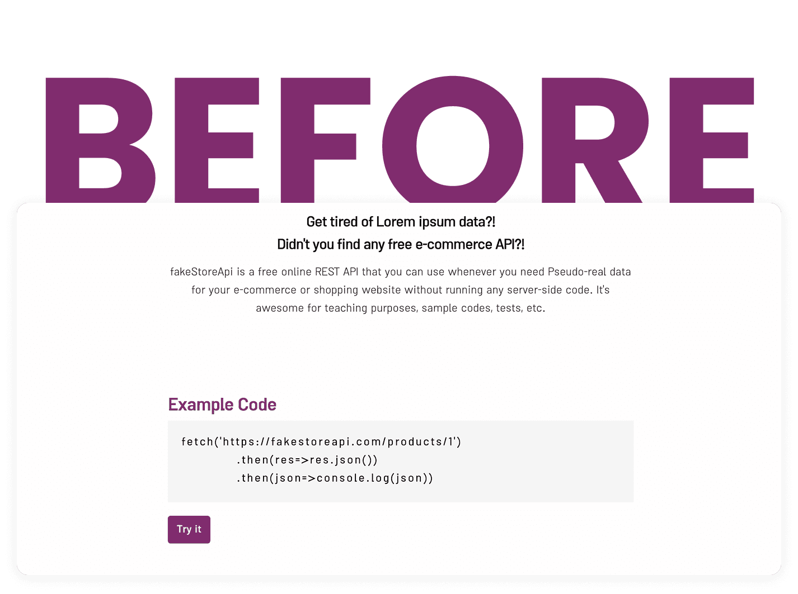
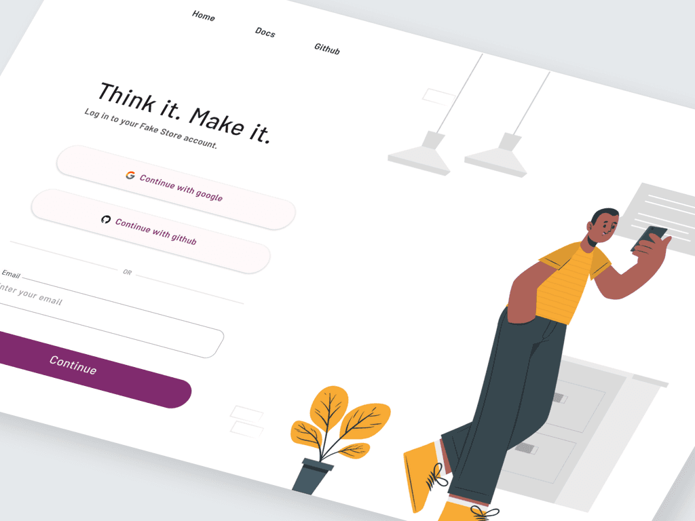
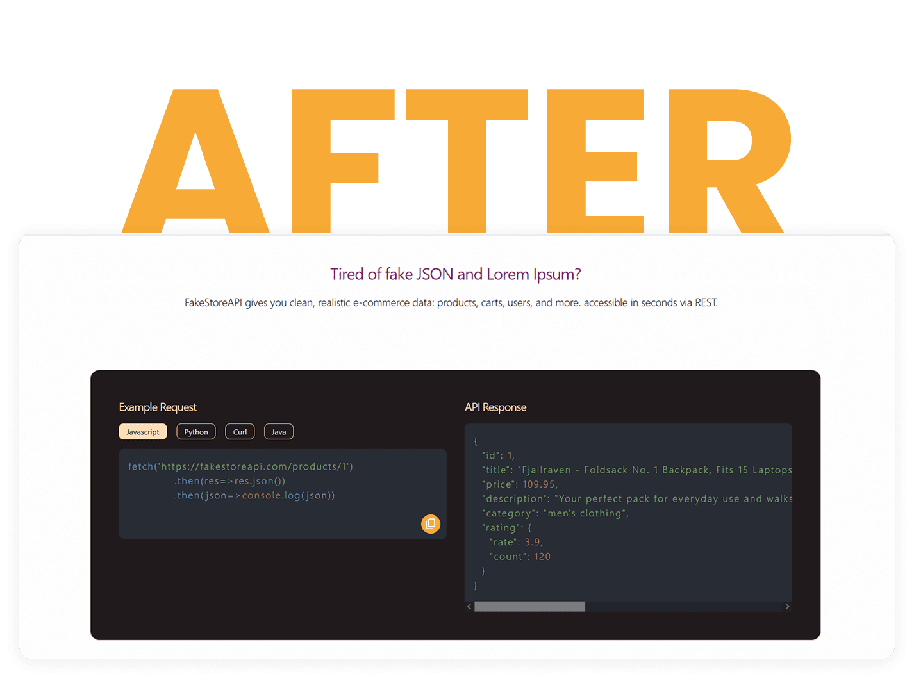

Background & Context
Transforming a Developer Tool
FakeStore API is a developer-focused platform that enables rapid prototyping and API experimentation through realistic e-commerce datasets. The existing experience provided access to API documentation but lacked a clear onboarding journey, structured resource discovery, and visibility into user behavior.
The project focused on improving developer onboarding, discoverability, and overall Developer Experience (DX).
My Role
Beyond redesigning the interface, I explored how FakeStore API could evolve into a measurable developer platform. By introducing authentication, user profiles, and behavioral analytics, the product would gain visibility into user needs and usage patterns, enabling more informed product decisions and continuous improvement.
Responsibilities
- Product strategy
- Design system
- Information architecture
- Prototyping
- Developer Experience (DX)
Problems & Opportunities
UX issues
- Unclear onboarding path
- Generic hero messaging
- Example code hidden below the fold
- High cognitive load for first-time visitors
Product issues
- No social proof or trust indicators
- Poor discoverability of available resources
- No authentication or user tracking
Design issues
- Fragmented UI patterns
- Lack of a scalable design system
- Repeated design decisions
Desk Research & Competitor Analysis
DummyJSON
Strengths: clear information hierarchy, well-organized endpoint structure, and easy-to-scan documentation.
Key takeaway: users should discover available resources without extensive exploration. A dedicated Resources section was introduced for FakeStore.
ReqRes
Strengths: simple onboarding, immediately visible API examples, and a low learning curve.
Key takeaway: developers evaluate APIs through examples, not marketing content. Example code was prioritized and the distance between landing and validation was reduced.
Postman
Strengths: strong developer onboarding, accounts and personalization, analytics and usage visibility.
Key takeaway: understanding user behavior enables data-driven decisions. Authentication, profiles, and usage analytics were proposed.

Setting the Vision
We defined the experience we wanted developers to have around five goals:
- Faster onboarding
- Lower friction to first API usage
- Better discoverability
- Higher trust
- A scalable design foundation
Design hypothesis
If developers can understand the API, validate it quickly, and easily discover resources, they will engage more deeply and adopt the platform faster.
Redesigning the Core Experience
Example code
Previously hidden below the fold, example code received more prominent placement to enable easier validation and faster exploration.
Resources section
A new resource area introduced endpoint discovery and documentation shortcuts, reducing exploration friction.


Establishing a Design System
To replace inconsistent UI patterns and repeated decisions, I created a scalable system covering typography, colors, spacing, components, and interaction patterns.
Designing beyond the interface
Authentication, user profiles, saved endpoints, recently used resources, and usage analytics were proposed to move the product from a documentation website to a data-informed developer platform.
Measuring Success
Activation
- Time-to-first API call
- Sign-up rate
Engagement
- Documentation click-through rate
- Resource usage
- GitHub click-through rate
Retention
- Returning users
- API calls per user
Post-launch Validation with Microsoft Clarity
After launch, I used Microsoft Clarity to validate the redesign with real user behavior and identify the next set of improvements.
What the data showed
Developers typically followed a focused path: landing page, documentation, then exit. The 55.84% scroll depth and 1.8-minute average active time supported the hypothesis that visitors make quick technical decisions rather than consuming marketing content.
Interaction friction
The API example received strong engagement, but a 31.67% dead-click rate showed that users often expected the code itself to be interactive instead of noticing the copy action. Rage clicks remained low at 1.17%, concentrating around the same code request.
Design opportunity
Make copying an example more explicit and reduce ambiguity around the code block. In the Resources section, prioritize destination links and actions over explanatory copy because developers scanned for direct paths to endpoints and documentation.
Performance
The site scored 82/100 in performance, with a 3.2-second Largest Contentful Paint. Optimizing hero media was identified as the clearest next performance improvement.
Results & Reflection
- Improved onboarding experience
- Better discoverability
- Stronger trust signals
- Established a scalable design system
- Created a roadmap for authentication and analytics
This project evolved from a website redesign into a broader product-thinking exercise. Beyond improving the interface, the work created a scalable foundation for growth, measurement, and future personalization.